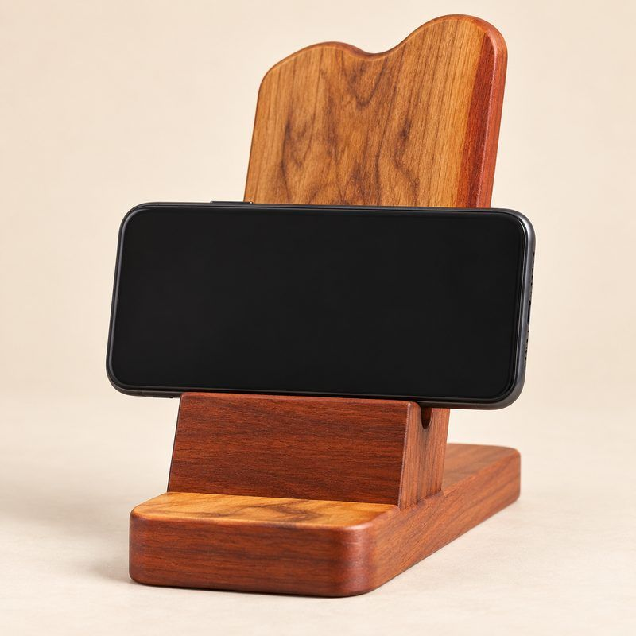
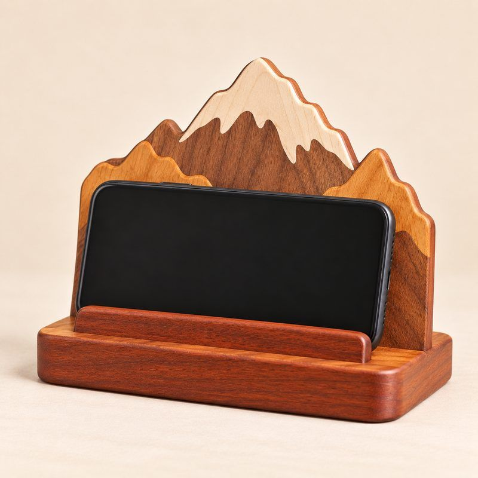
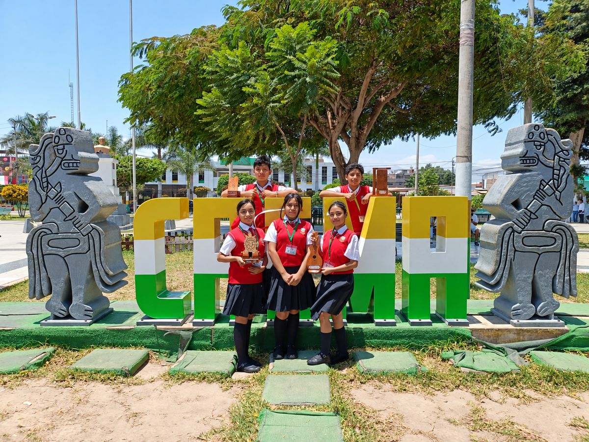
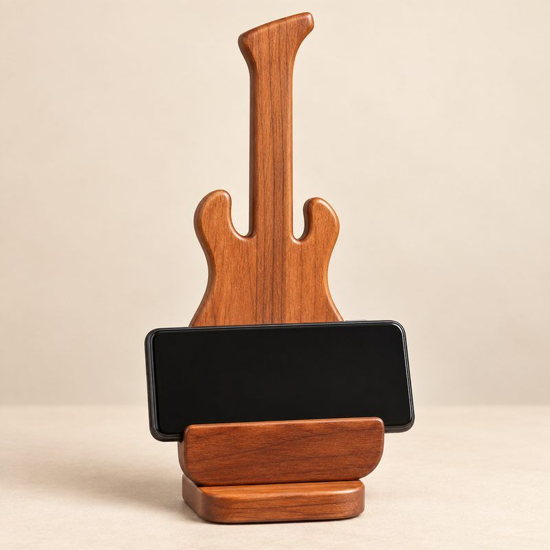
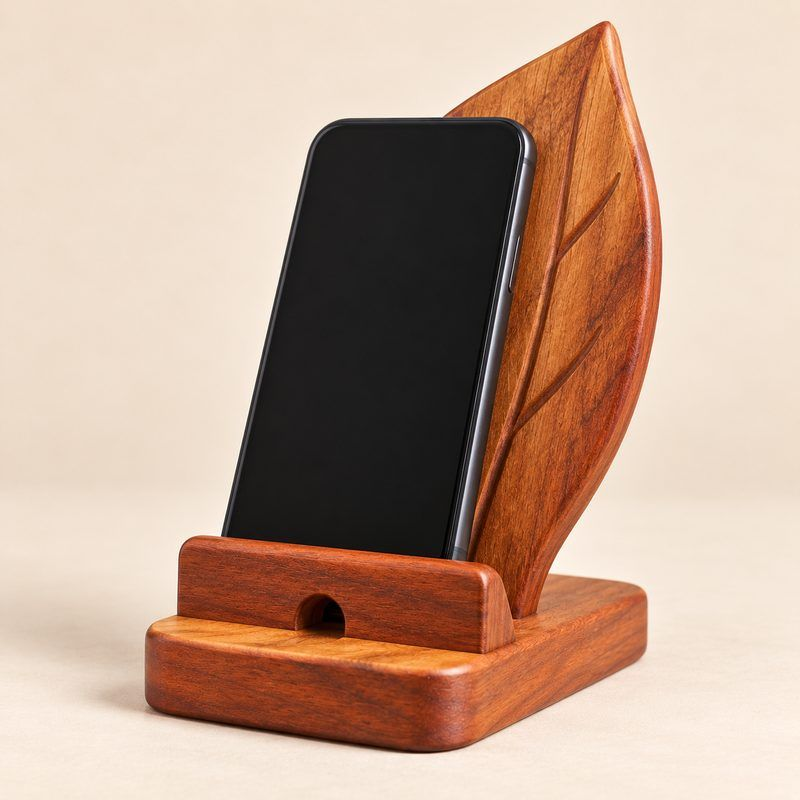
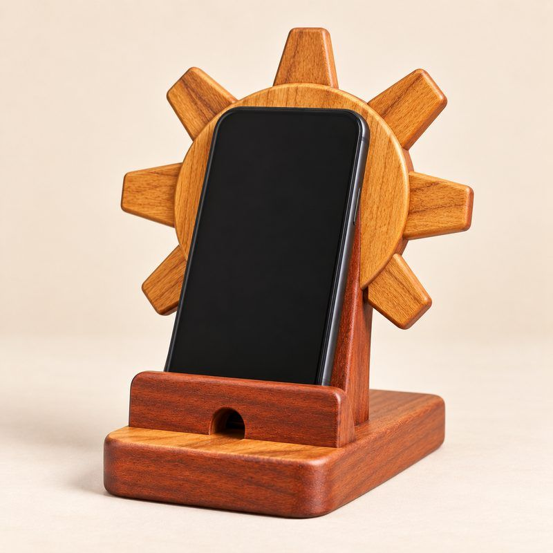
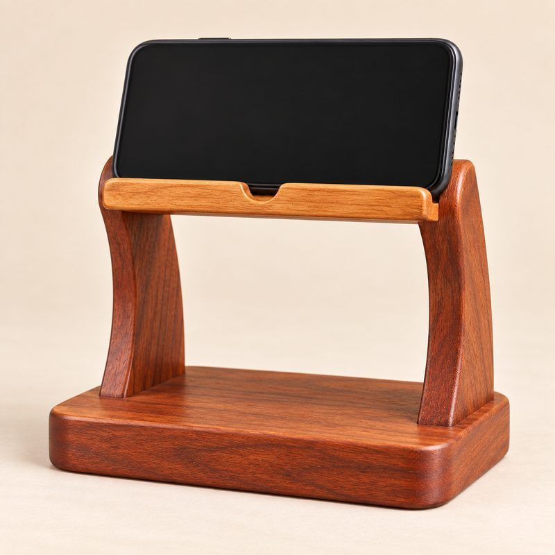

Celular en horizontal
Portacelular Clásico Horizontal
Base amplia y estable. Permite colocar el celular horizontalmente para observar videos, clases y tutoriales.
Consultar por WhatsAppMadera que sostiene tus ideas
Transformamos pequeños restos de madera en portacelulares con diseños propios. Conoce nuestros modelos y elige el que más te guste.

Somos el equipo de estudiantes detrás de MaderArte Eco. Recolectamos retazos de madera que iban a desecharse, dibujamos cada diseño, cortamos, lijamos, ensamblamos, aplicamos el acabado y probamos la estabilidad de cada pieza con distintos celulares.

Seis diseños hechos a mano con retazos de madera aprovechable. Pulsa «Consultar» en el que te guste y te respondemos por WhatsApp.

Base amplia y estable. Permite colocar el celular horizontalmente para observar videos, clases y tutoriales.
Consultar por WhatsApp
Diseño inspirado en la forma de una guitarra. Combina utilidad y creatividad, convirtiéndose también en un elemento decorativo.
Consultar por WhatsApp
Inspirado en una hoja, relacionado con la naturaleza y el cuidado ambiental. Incluye una abertura para conectar el cargador.
Consultar por WhatsApp
Inspirado en el sol andino. Combina diferentes tonalidades naturales de madera y mantiene el celular en posición vertical.
Consultar por WhatsAppInspirado en los paisajes nevados de Áncash. Distintas tonalidades de madera representan las montañas y la nieve.
Consultar por WhatsApp
Soporte elevado que mantiene el celular a mayor altura. El espacio inferior también puede aprovecharse para pequeños objetos.
Consultar por WhatsAppEscríbenos por WhatsApp, cuéntanos qué diseño te interesa y coordinamos los detalles.
Escribir por WhatsAppWhatsApp: